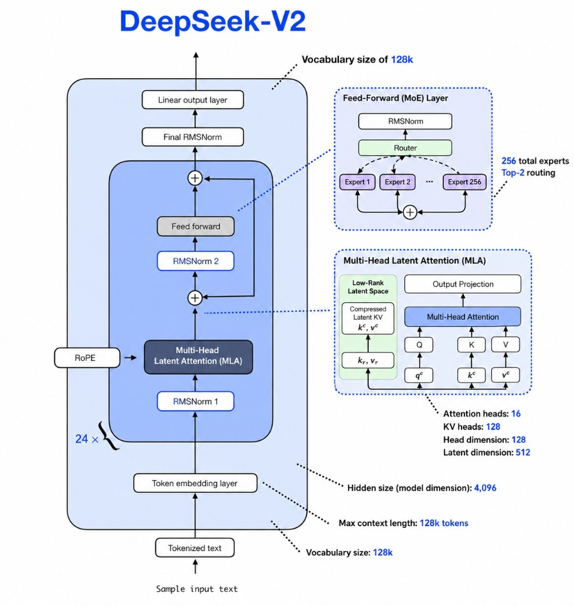

This chapter covers DeepSeek-V2 (May 2024) and DeepSeek-V3 (Dec 2024) in one stop. Both are decoder-only sparse MoE models with MLA, RoPE, RMSNorm, and DeepSeekMoE feed-forward layers. V2 introduced the core architecture — latent KV compression plus fine-grained experts. V3 keeps that foundation but scales up, improves routing with auxiliary-loss-free load balancing, drops token dropping, adds Multi-Token Prediction, and trains with FP8 + DualPipe.
Sections 01–05 walk through runnable PyTorch for the V3 stack (deepseek_v3.py in Bumblebee). Section 06 is the architecture guide: V2 vs V3 side by side. Section 08 holds the comparison tables (Mixtral vs DeepSeek, plus the full V2/V3 summary).
Delta from Mixtral (05)
- GQA + sliding window → MLA (cache compressed
c_kv+ small RoPE slice; decoupled nope/rope heads in V3) - 8 coarse experts, top-2, no shared path → DeepSeekMoE: 160 routed (V2) or 256 routed (V3), plus shared expert(s)
- Mixtral MoE from layer 0 → V3 keeps first 3 layers dense SwiGLU
- V3 only: auxiliary-loss-free expert balancing, no token dropping, 128K vocab, MTP + FP8 training
Full comparisons: §08 Comparison · V2 vs V3 architecture: §06.
Production hyperparameters — V2 vs V3
Our teaching code scales these numbers down (see deepseek_v2.py and deepseek_v3.py). The diagrams above use the production values from the DeepSeek papers and HF configs.
V2 · hidden_size5120 · 60 layers · 100K vocabV2 · MoE160 routed experts · top-6 · 2 shared expertsV2 · MLA16 attn heads · latent dim 512 · head dim 128V3 · hidden_size7168 · 61 layers · 128K vocabV3 · MoE256 routed experts · top-8 · 1 shared expertV3 · MLA64 attn heads · latent dim 512 · head dim 128Both128K context (YaRN extension) · RMSNorm · RoPE · SwiGLU expertsV3 · training14.8T tokens · MTP objective · FP8 mixed precision · DualPipeV2 introduces MLA; V3 adds decoupled RoPE on a head slice
Delta vs Mixtral / LLaMA (GQA)
- V2 (paper): compress K/V into shared latent
c_kv— ~93% KV cache reduction vs full MHA. Production V2 uses MLA with RoPE (see diagram). - V3 (code below): splits each head into content (
nope_head_dim) and position (rope_head_dim). Cachec_kv+ small RoPE keys viaw_kr; Q fromw_down_q/w_qr. - K = cat(K_nope, K_rope); V = nope only. Same MLA idea at both scales; V3 is the recipe Kimi K2, GLM-4.5, and Mistral Large 3 copied.
MLA splits each head into a content (nope) part and a position (rope) part. KV path: w_down_kv compresses x → c_kv (cached); w_up_k/w_up_v expand to content K and V; w_kr bypasses the latent for RoPE keys (so positional encoding is exact). Q path: w_down_q → c_q; w_up_q + w_qr reconstruct Q. K = cat(K_nope, K_rope); Q = cat(Q_nope, Q_rope). V has nope_head_dim only.
1class MultiHeadLatentAttention(nn.Module):
2 def __init__(self, config) -> None:
3 super().__init__()
4 self.dk = config.dk # nope_head_dim + rope_head_dim
5 self.H = config.H
6 self.kv_lora_rank = config.kv_lora_rank
7 self.q_lora_rank = config.q_lora_rank
8 self.dmodel = config.dmodel
9 self.nope_head_dim = config.nope_head_dim # content part of head (no RoPE)
10 self.rope_head_dim = config.rope_head_dim # position part of head (gets RoPE)
11 # ── KV path: compress x → c_kv (what gets cached), then expand to K, V ─────
12 self.w_down_kv = nn.Linear(self.dmodel, self.kv_lora_rank, bias=False)
13 self.w_up_k = nn.Linear(self.kv_lora_rank, self.H * self.nope_head_dim, bias=False) # content K
14 self.w_up_v = nn.Linear(self.kv_lora_rank, self.H * self.nope_head_dim, bias=False) # V (no RoPE)
15 self.w_kr = nn.Linear(self.dmodel, self.H * self.rope_head_dim, bias=False) # RoPE K bypasses latent
16 # ── Q path: compress x → c_q, then expand to Q_nope and Q_rope ─────────────
17 self.w_down_q = nn.Linear(self.dmodel, self.q_lora_rank, bias=False)
18 self.w_up_q = nn.Linear(self.q_lora_rank, self.H * self.nope_head_dim, bias=False) # content Q
19 self.w_qr = nn.Linear(self.q_lora_rank, self.H * self.rope_head_dim, bias=False) # RoPE Q from latent
20 # V has nope_head_dim per head only (no RoPE in values)
21 self.wo = nn.Linear(self.H * self.nope_head_dim, self.dmodel, bias=False)
22
23 def forward(self, x, rope, mask):
24 B, S, dmodel = x.shape
25 # ── KV path ───────────────────────────────────────────────────────────────
26 c_kv = self.w_down_kv(x) # (B, S, kv_lora_rank) — this gets cached
27 K_nope = self.w_up_k(c_kv).view(B,S,self.H,self.nope_head_dim).transpose(1,2) # content K
28 K_rope = self.w_kr(x).view(B,S,self.H,self.rope_head_dim).transpose(1,2) # position K (bypass latent)
29 K_rope = rope(K_rope) # RoPE applied to position part only
30 K = torch.cat([K_nope, K_rope], dim=-1) # (B, H, S, dk)
31 # ── Value path ────────────────────────────────────────────────────────────
32 V = self.w_up_v(c_kv).view(B,S,self.H,self.nope_head_dim).transpose(1,2) # V: nope only
33 # ── Q path ────────────────────────────────────────────────────────────────
34 c_q = self.w_down_q(x) # (B, S, q_lora_rank)
35 Q_nope = self.w_up_q(c_q).view(B,S,self.H,self.nope_head_dim).transpose(1,2) # content Q
36 Q_rope = self.w_qr(c_q).view(B,S,self.H,self.rope_head_dim).transpose(1,2) # position Q
37 Q_rope = rope(Q_rope) # RoPE applied to position part only
38 Q = torch.cat([Q_nope, Q_rope], dim=-1) # (B, H, S, dk)
39 # ── Attention ─────────────────────────────────────────────────────────────
40 attn_score = Q @ K.transpose(-1, -2) / math.sqrt(self.dk) # (B, H, S, S)
41 attn_score = attn_score.masked_fill(mask[:S, :S] == 0, float("-inf"))
42 attn_score = F.softmax(attn_score, dim=-1) # (B, H, S, S)
43 x = attn_score @ V # (B, H, S, nope_head_dim)
44 x = x.transpose(1,2).contiguous().view(B,S,self.H*self.nope_head_dim) # (B,S,H*nope)
45 return self.wo(x) # (B, S, dmodel)
1 # Mixtral / LLaMA: separate wk, wv; repeat_kv for GQA; RoPE on Q, K
2 query = self.wq(x).view(...).transpose(1, 2)
3 key = self.wk(x).view(...).transpose(1, 2) # full or grouped KV heads
4 value = self.wv(x).view(...).transpose(1, 2)
5 # residual passes (Q, K, V, mask) into self_attention_block
V2: 160 experts top-6 + 2 shared · V3: 256 experts top-8 + 1 shared
Delta vs Mixtral
- Mixtral: 8 large experts, top-2, no shared path. DeepSeekMoE uses many small SwiGLU experts for finer specialization.
- V2: 160 routed · top-6 · 2 shared experts · auxiliary load-balance losses · token dropping during training.
- V3: 256 routed · top-8 · 1 shared expert · auxiliary-loss-free bias routing · no token dropping.
DeepSeek absorbs the shared expert directly into MoE(config). shared_expert runs unconditionally for every token; the routed dispatch loop (same pattern as Mixtral) handles the sparse path. Final output: shared_expert_out + output.
1class MoE(nn.Module):
2 def __init__(self, config) -> None:
3 super().__init__()
4 self.experts = nn.ModuleList(
5 [SwiGLUFeedForward(config) for _ in range(config.num_experts)]
6 )
7 self.shared_expert = SwiGLUFeedForward(config) # always-on expert
8 self.router = MoERouter(config)
9 self.top_k = config.top_k
10
11 def forward(self, x):
12 shared_expert_out = self.shared_expert(x) # runs for ALL tokens unconditionally
13 weights, indices = self.router(x) # (B, S, top_k)
14 output = torch.zeros_like(x) # (B, S, dmodel)
15 for k in range(self.top_k):
16 for i, expert in enumerate(self.experts):
17 mask = indices[:, :, k] == i # (B, S) — tokens routed to expert i at slot k
18 if mask.any():
19 expert_out = expert(x[mask]) # (num_selected, dmodel)
20 selected_weights = weights[:, :, k][mask].unsqueeze(-1) # (num_selected, 1)
21 output[mask] += selected_weights * expert_out
22 return shared_expert_out + output # shared + routed
1 num_experts: int = 8 # Mixtral: 8 large experts
2 num_experts: int = 4 # DeepSeek (scaled from 256): fine-grained experts
3 top_k: int = 2 # top-2 routed; plus 1 shared_expert always active
1class MixtralMoEBlock(nn.Module):
2 def __init__(self, d_model, d_ff, n_experts=8, top_k=2, ...):
3 self.experts = nn.ModuleList([SwiGLUFeedForward(d_model, d_ff) for _ in range(8)])
4 # 8 *large* experts, top-2 (not 256 fine-grained, top-8)
5 def forward(self, x):
6 ... # route with MoERouter, combine top-k *weights* and expert outputs
Shared expert: absorbed into MoE(config) — not a separate wrapper
Delta vs Mixtral
- New: a
self.shared_expert(always-onSwiGLUFeedForward) is embedded directly insideMoE(config), alongside the routed expert list. No separate wrapper class is needed.
In deepseek_v3.py, the shared expert is built directly into MoE(config) — there is no separate MoEWithSharedExpert wrapper. self.shared_expert is a SwiGLUFeedForward(config) that runs unconditionally in every forward pass. The return is shared_expert_out + output.
1 def forward(self, x): # inside MoE(config)
2 shared_expert_out = self.shared_expert(x) # runs for ALL tokens — unconditional
3 weights, indices = self.router(x) # (B, S, top_k)
4 output = torch.zeros_like(x) # accumulates routed expert contributions
5 for k in range(self.top_k):
6 for i, expert in enumerate(self.experts):
7 mask = indices[:, :, k] == i # (B, S) — tokens routed to expert i at slot k
8 if mask.any():
9 expert_out = expert(x[mask]) # (num_selected, dmodel)
10 selected_weights = weights[:, :, k][mask].unsqueeze(-1) # (num_selected, 1)
11 output[mask] += selected_weights * expert_out
12 return shared_expert_out + output # shared + routed
1 def forward(self, x):
2 return self.routed_moe(x) # no always-on SwiGLU path in Mixtral
Block(config, layer_idx) — MLA + conditional dense/MoE
Delta vs Mixtral
- Attention sublayer is
MultiHeadLatentAttention(config)— forward takes(x, rope, mask). - FFN is
MoE(config)forlayer_idx >= config.n_dense_layers, else denseSwiGLUFeedForward(config). The decision is made at construction time — no runtime branching.
Identical pre-norm two-residual pattern to Mixtral’s Block, but attention is mhla (MultiHeadLatentAttention) and FFN is conditionally MoE or dense SwiGLUFeedForward depending on layer_idx. rope and mask are shared from Deepseek.
1class Block(nn.Module):
2 def __init__(self, config, layer_idx) -> None:
3 super().__init__()
4 self.mhla = MultiHeadLatentAttention(config)
5 # first n_dense_layers use dense SwiGLU; later layers use MoE+shared
6 if layer_idx >= config.n_dense_layers:
7 self.ff = MoE(config)
8 else:
9 self.ff = SwiGLUFeedForward(config) # dense for first n_dense_layers
10 self.rms_1 = RMSNorm(config) # pre-norm for MLA
11 self.rms_2 = RMSNorm(config) # pre-norm for FFN/MoE
12
13 def forward(self, x, rope, mask):
14 norm_x = self.rms_1(x)
15 x = x + self.mhla(norm_x, rope, mask)
16 x = x + self.ff(self.rms_2(x))
17 return x
1 x = self.residual_connections[0](x, lambda x: self.self_attention_block(x, x, x, mask))
2 x = self.residual_connections[0](x, lambda x: self.self_attention_block(x, mask)) # MLA
Token embed, RoPE, N blocks, final norm, lm_head
Delta vs Mixtral
- Layers
0 … n_dense_layers-1use denseSwiGLUFeedForward(no MoE). Remaining blocks useMoE(config)(with shared expert built in). The decision is made per-block at construction time vialayer_idx. - The
DeepseekConfigdataclass centralizes all hyperparameters including MLA dims (kv_lora_rank,q_lora_rank,rope_head_dim,nope_head_dim) alongside MoE params (num_experts,top_k,n_dense_layers).
Deepseek(config) follows the same self-contained pattern as Mixtral and Mistral. Key differences: rope is initialized with config.rope_head_dim (not full dk); blocks are Block(config, layer_idx) so each block knows its own dense/MoE setting; mask is a full tril (no sliding window).
1class Deepseek(nn.Module):
2 def __init__(self, config) -> None:
3 super().__init__()
4 self.wte = nn.Embedding(config.vocabsize, config.dmodel)
5 # MLA uses rope_head_dim only — RoPE head dim is smaller than full dk
6 self.rope = RotaryPositionalEmbedding(config, config.rope_head_dim)
7 self.blocks = nn.ModuleList(
8 [Block(config, layer_idx) for layer_idx in range(config.N)]
9 )
10 self.norm = RMSNorm(config)
11 self.lm_head = nn.Linear(config.dmodel, config.vocabsize, bias=False)
12 self.lm_head.weight = self.wte.weight # weight tying
13 # full causal mask (no sliding window — DeepSeek uses standard tril)
14 self.register_buffer("mask",
15 torch.tril(torch.ones(config.max_seq_len, config.max_seq_len)),
16 )
17
18 def forward(self, x):
19 x = self.wte(x)
20 for block in self.blocks:
21 x = block(x, self.rope, self.mask)
22 x = self.norm(x)
23 return self.lm_head(x) # raw logits
1def build_llama(vocab_size, max_seq_len, d_model=4096, N=32, h=32, n_kv_heads=8,
2 dropout=0.0, d_ff=11008):
3 for _ in range(N):
4 self_attention_block = GQABlock(d_model, h, n_kv_heads, max_seq_len, dropout)
5 feed_forward_block = SwiGLUFeedForward(d_model, d_ff, dropout) # no MoE
6 ...
Same family, different scale and routing
Both are decoder-only Transformer MoE models: MLA, DeepSeekMoE, RoPE, RMSNorm, sparse expert activation, and 128K context after extension. V2 introduced the core architecture; V3 scales it and improves MoE routing, training efficiency, and the prediction objective.
Attention — mostly the same
V2 introduces Multi-head Latent Attention: instead of caching full K and V per head, MLA stores a compressed latent vector (plus a small RoPE-related slice at inference). The V2 paper reports ~93% KV cache reduction vs DeepSeek 67B and up to 5.76× generation throughput. V3 keeps MLA at larger scale — same attention idea, bigger tensors.
| Attention type | KV cache |
|---|---|
| MHA (Transformer) | Large — full K + V per layer, head, token |
| GQA (LLaMA / Mixtral) | Smaller — grouped KV heads |
| MQA | Very small, but often weaker quality |
| MLA (DeepSeek V2/V3) | Very small while preserving strong quality |
MoE / feed-forward — biggest architectural shift V2 → V3
Both use DeepSeekMoE: fine-grained routed experts, shared experts, sparse activation. V2 uses auxiliary losses for load balancing and token dropping during training. V3 replaces those with auxiliary-loss-free routing: a learnable bias on each expert’s score is nudged down when overloaded and up when underloaded — no extra loss terms forcing balance.
Load balancing & token dropping
V2: expert-level, device-level, and communication balance auxiliary losses; tokens can be dropped when loads skew. V3: bias-based balancing only; no token dropping in training or inference.
Scale, tokenizer, training
V2: 236B total, 21B active, 8.1T pretrain tokens, 100K vocab, next-token prediction. V3: 671B total, 37B active, 14.8T tokens, 128K vocab, adds Multi-Token Prediction (MTP) during training (also usable for speculative decoding), and makes FP8 mixed-precision + DualPipe pipeline parallelism central to economical training (~2.788M H800 GPU-hours reported).
One sentence: DeepSeek-V2 introduced MLA plus DeepSeekMoE; DeepSeek-V3 keeps that foundation, scales much larger, improves expert routing without auxiliary losses, removes token dropping, adds MTP, expands the tokenizer, and trains efficiently with FP8 and DualPipe.
Mixtral (05) vs DeepSeek V3 · DeepSeek V2 vs V3
Canonical tables for this chapter — same pairs as the delta card above.
Mixtral 8×7B vs DeepSeek V3
| Aspect | Mixtral (coarse MoE + GQA) | DeepSeek V3 |
|---|---|---|
| Attention | GQA: cache full K/V at head d_k | MLA: cache low-rank c_kv + RoPE slice |
| FFN | 8 large experts, top-2; no always-on path | 256 small experts, top-8 + 1 shared expert |
| Early layers | MoE from block 0 in our sketch | First 3 blocks dense SwiGLU only |
| Load balancing | Router softmax + top-k (no DeepSeek aux system) | Auxiliary-loss-free bias routing |
| Context | 32K (8×7B) | 128K (YaRN extension) |
DeepSeek V2 vs DeepSeek V3 — quick summary
| Feature | DeepSeek-V2 | DeepSeek-V3 |
|---|---|---|
| Base architecture | Decoder Transformer MoE | Decoder Transformer MoE |
| Attention | MLA (introduced here) | MLA (scaled) |
| FFN | DeepSeekMoE | Improved DeepSeekMoE |
| Load balancing | Auxiliary losses | Auxiliary-loss-free routing |
| Token dropping | Yes (training) | No |
| Total params | 236B | 671B |
| Active params / token | 21B | 37B |
| Layers | 60 | 61 |
| Hidden size | 5120 | 7168 |
| Routed experts | 160 | 256 |
| Shared experts | 2 | 1 |
| Active routed / token | 6 | 8 |
| Vocabulary | 100K | 128K |
| Context | 128K | 128K |
| Pretraining tokens | 8.1T | 14.8T |
| Extra objective | No MTP | Multi-Token Prediction |
| FP8 training | Not central | Yes (major contribution) |
| Main design goal | Efficient open MoE model | Larger, stronger, more systems-efficient MoE |
Papers & technical sources
Primary reports and references for this chapter. Read these for full equations, training details, and official hyperparameters.
- DeepSeek-V2: A Strong, Economical, and Efficient MoE Language ModelIntroduces MLA and DeepSeekMoE — 236B total, 21B active.
- DeepSeek-V3 Technical ReportScales MLA + MoE — auxiliary-loss-free routing, MTP, FP8 training.
- Hugging Face: deepseek-ai/DeepSeek-V3Production config for MLA dims, expert counts, dense early layers.
Comments